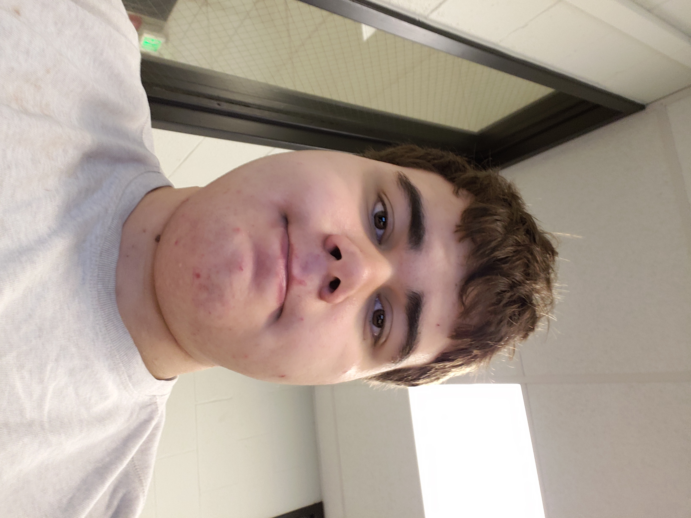

About MeEmmet Stanevich |
 |
Background: |
My name is Emmet Stanevich. I was born in New York, and currently live in Ann Arbor, Michigan. For my entire life, I've lived in either New York or Michigan, having moved between the two states a couple times. |
|
I am currently a sophomore at Eastern Michigan University. My major is in Computer Science. I am currently taking COSC 231. I was also the lead driver of Community High School's robotics team, being with the team during its first 3 years. | |
Interests & Hobbies |
My main interest is in computers, specifically video games. |
| |
Dreams & Goals: |
My main dream is to become a video game developer, creating something that will bring entertainment to others. I have been a gemer for most of my life, and I wish to create something of my own for others to enjoy, just as I have enjoyed the works of others. I have already taken 2 summer camps in game modding a few years back. |
As the former lead driver of my High School robotics team, I have also become very interested in robots. As a result of this, I also aspire to learn more about robotics in general, both in terms of programming and physical mechanisms. While It has been a couple years since I was on the team, the experiences of driving the team's robot inspires me to learn more about robotics. |
Image Credits: |
{kind=link}
Last Updated: 10/8/2018